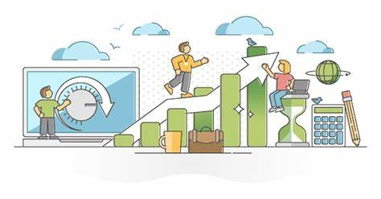

¿Qué es la Productividad Personal?
La productividad personal es la capacidad de gestionar el tiempo, los recursos y la energía de manera eficiente para alcanzar los objetivos personales y profesionales. Se trata de encontrar un equilibrio entre todas las áreas de la vida, mejorando continuamente nuestras habilidades y adoptando hábitos saludables.
Imagen Motivacional
Importancia del Desarrollo Integral
El desarrollo integral incluye no solo la productividad, sino también el crecimiento en todos los aspectos de la vida. Se busca mejorar la salud física, mental y emocional, desarrollar nuevas habilidades, y mantener una actitud de mejora continua. Este enfoque holístico nos ayuda a mantener el equilibrio y alcanzar el éxito sostenible.